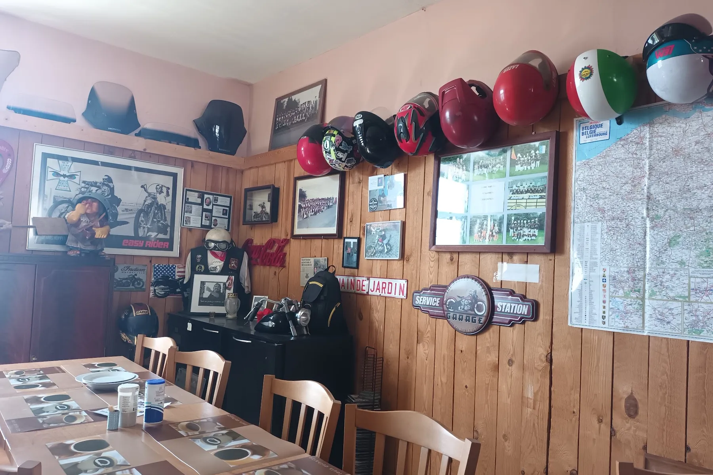
Café · Restaurant · Cerfontaine
L'Eau d'HeureCafé
Un café-restaurant de village, ouvert de 10 h à 22 h : steak-frites, crêpes, cafés chantilly et un accueil que les clients disent familial. Les motards y ont leurs habitudes, tout le monde y est le bienvenu.
Ouvert de 10 h à 22 h
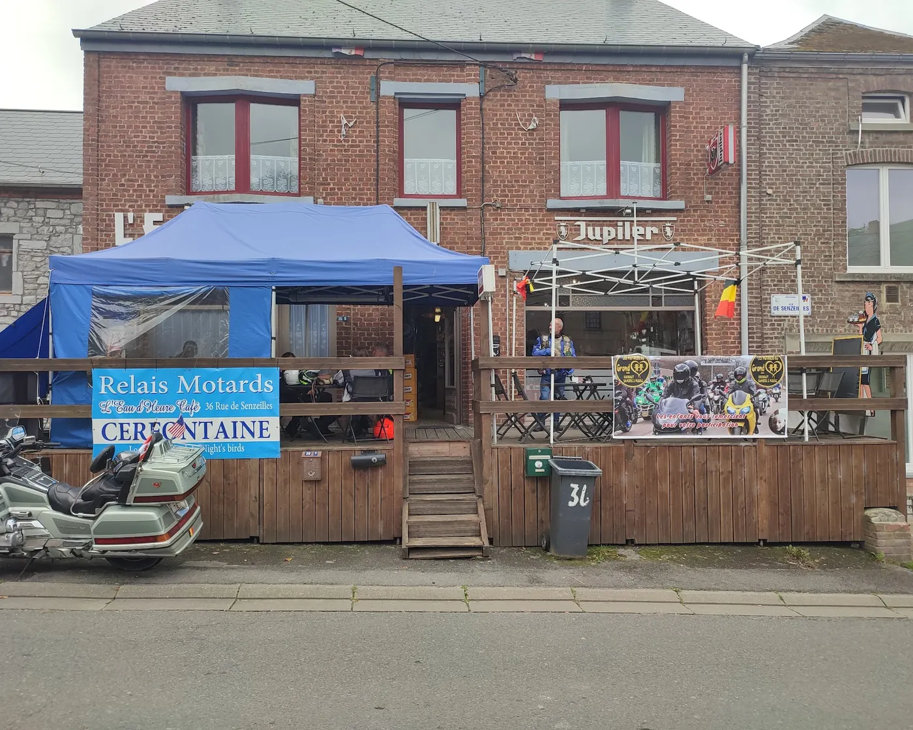
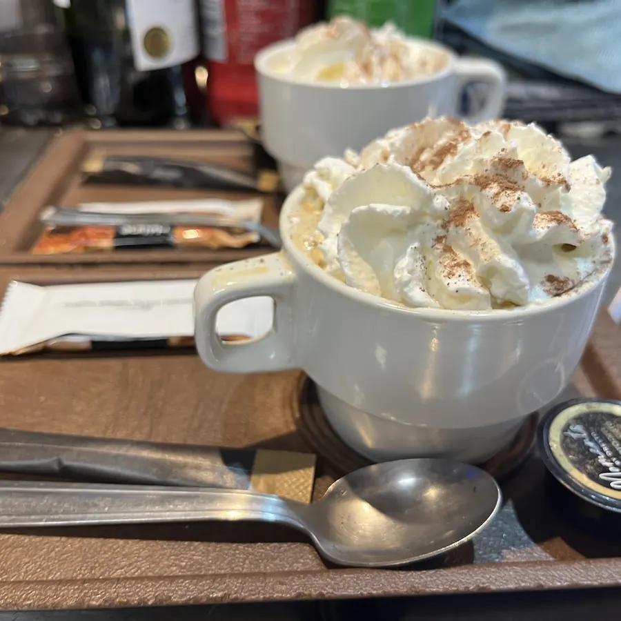
selon Google
- Des prix démocratiques
les prix démocratiques
: le compliment qui revient. Jacques P. - Ouvert de 10 h à 22 hTous les jours sauf le mercredi : un café le matin, un repas le soir.
- Motards bienvenus
pour les motards mais tout le monde est bienvenu
Jacques P.
Sur la table
Croque grillé, steak, poisson, crêpes et cafés chantilly : ce que les clients ont photographié sur la fiche Google.
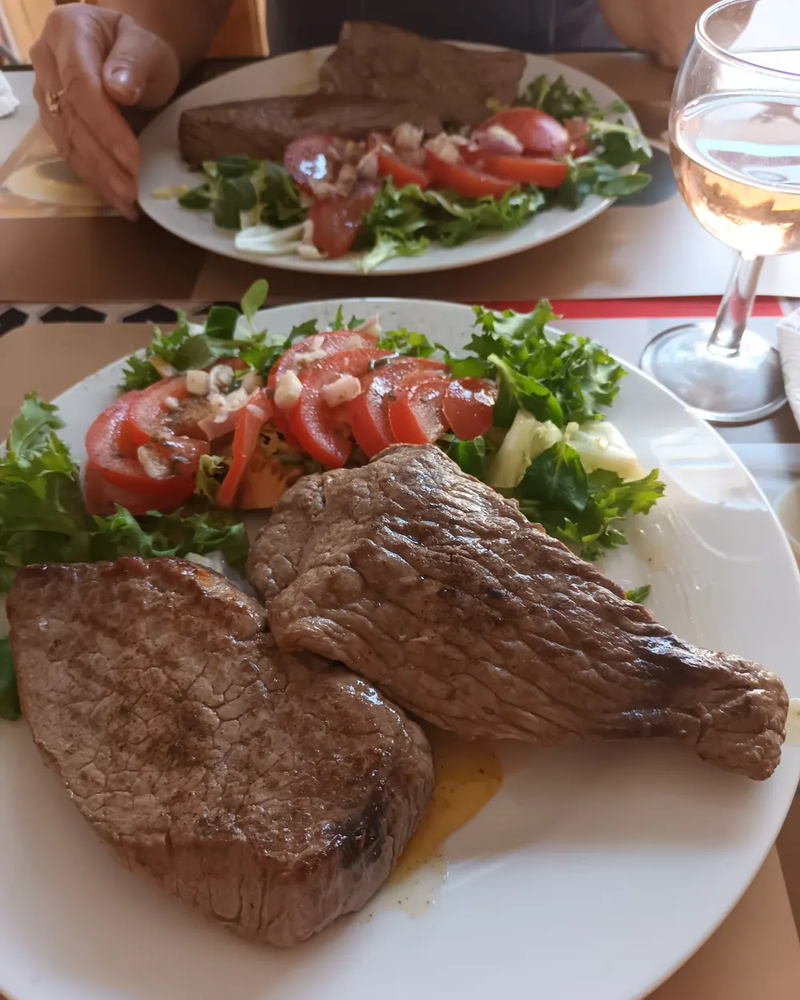
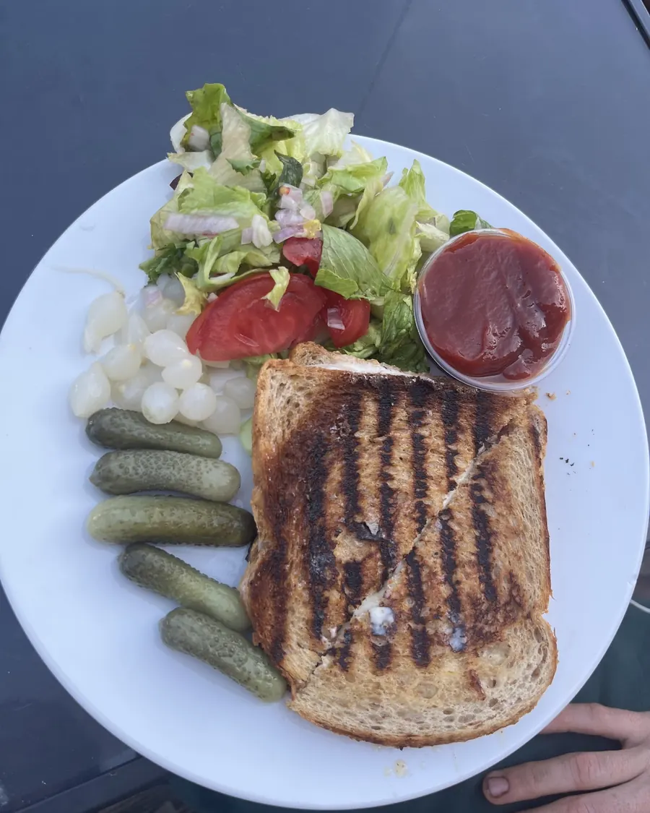
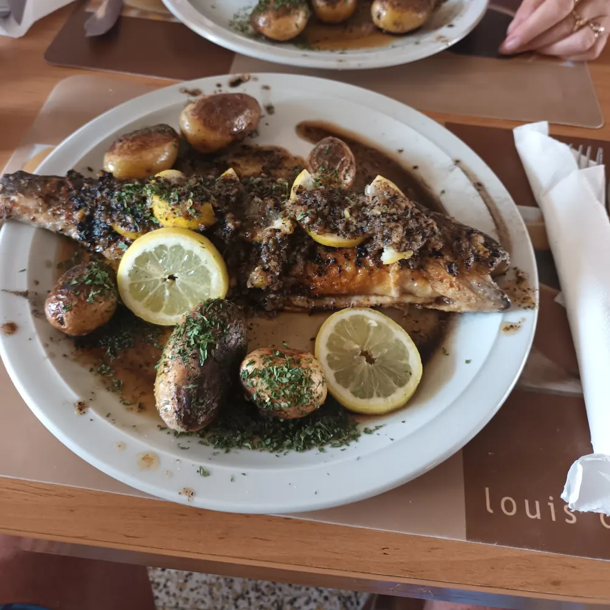
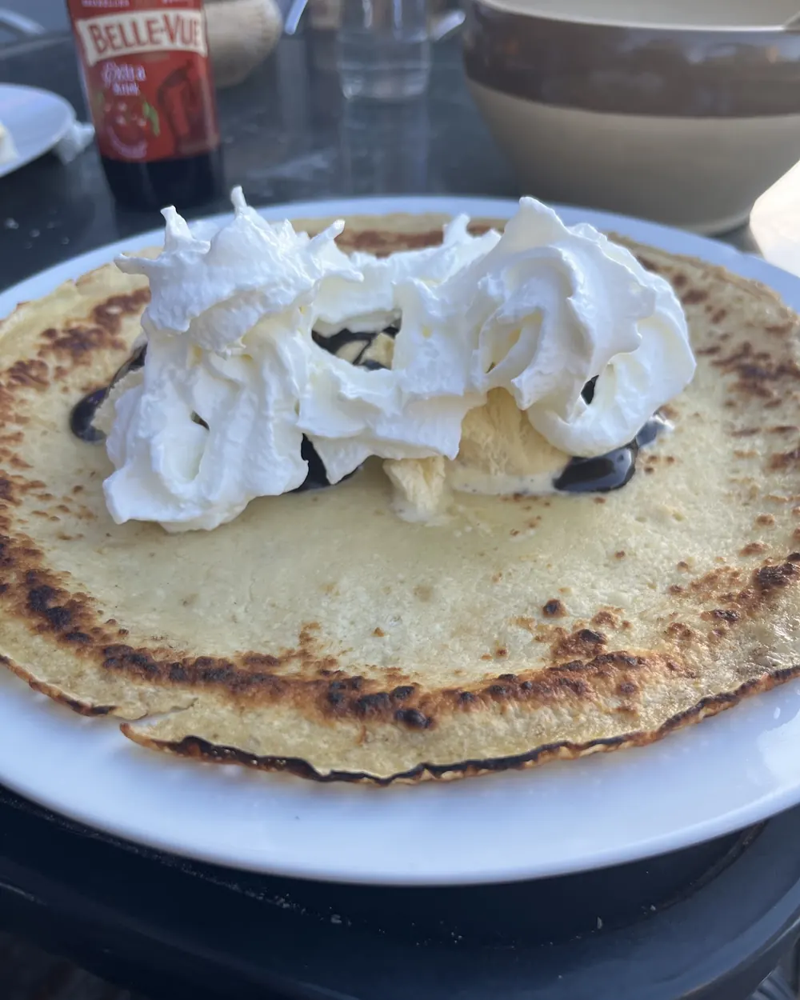
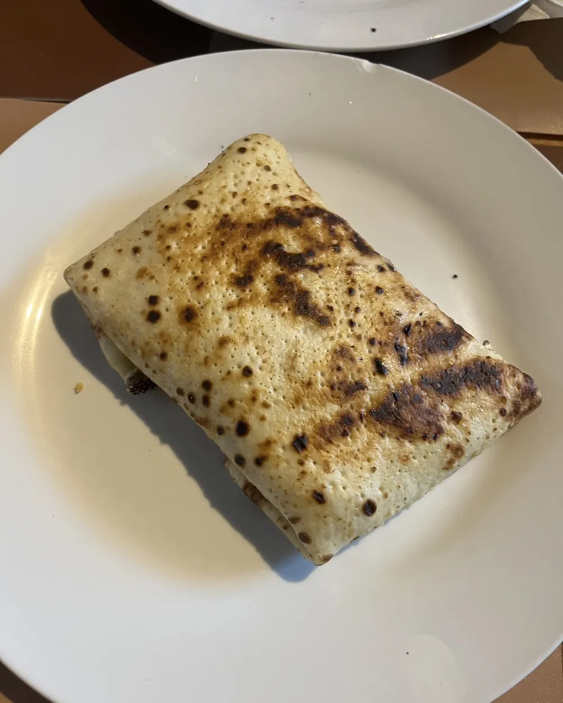
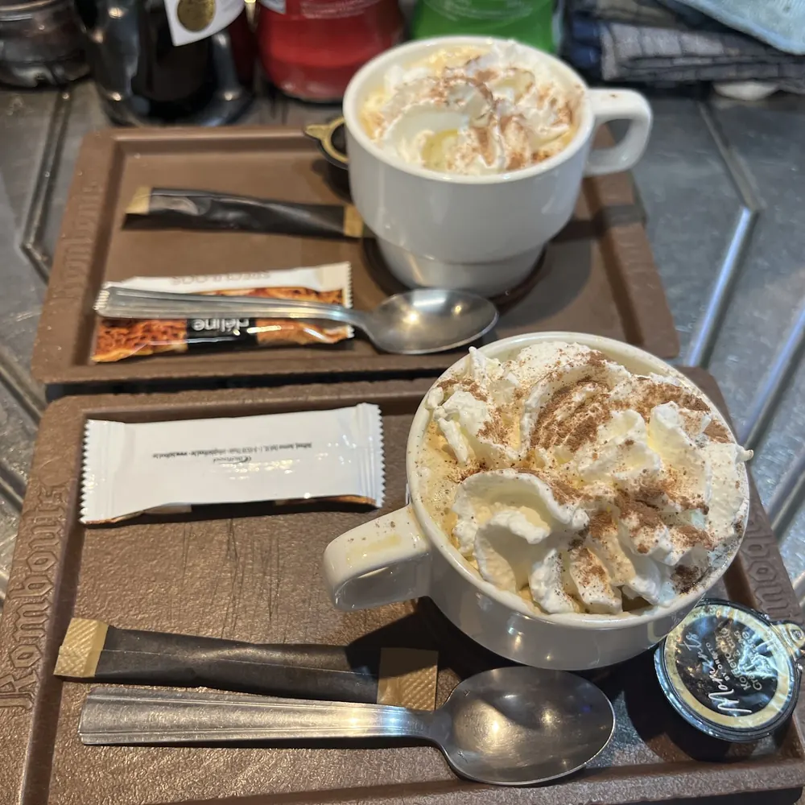
Réserver une table
Choisissez le jour, l'heure du repas et le nombre de personnes : l'équipe vous confirme.
Ce qu'on y mange, ce qu'on y paie
Les mots des clients sur Google : la carte se découvre sur place.
À manger
Steak, frites, saladePour seulement 10 euros, on a mangé un steak absolument délicieux.
Peter M.
Le bon steak fritesVivement la prochaine fois pour un bon steak frites salade..
Leclercq T.
Sur placepossibilités de manger sur place a des prix correct
Frédéric G.
Au comptoir
Une pinteSur un coup de tête, nous sommes allés à six boire une pinte.
Peter M.
Le barmanLe barman est aux top et le patron aussi
Frédéric G.
La musiqueEt bonne musique!
Dominique G.
Les prix
10 à 20 € le repasFourchette indiquée sur la fiche Google du café.
Google
DémocratiquesPatron super conviviale et prix démocratique
Elodie D.
Prix motardChouette accueil. Prix motard...
Yvon L.
La carte complète se découvre sur place. Une question ? Écrivez-nous.
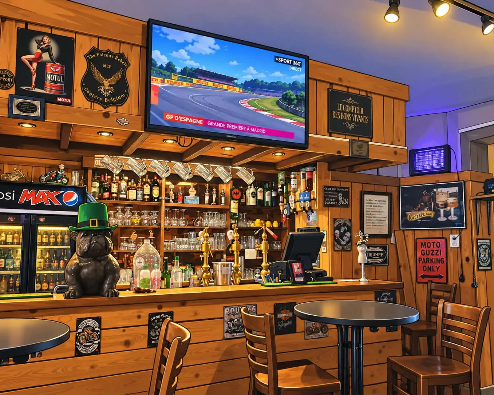
On s'y pose, on y reste
Comptoir de bois, écran pour les courses, affiches de moto partout et un barman que les clients citent par son accueil. On y vient boire une pinte et on finit par rester manger.
« si vous voulez passer un bon moment dans une ambiance familiale je recommande »
Frédéric G. · avis Google
Sur un coup de tête, nous sommes allés à six boire une pinte.
Peter M.
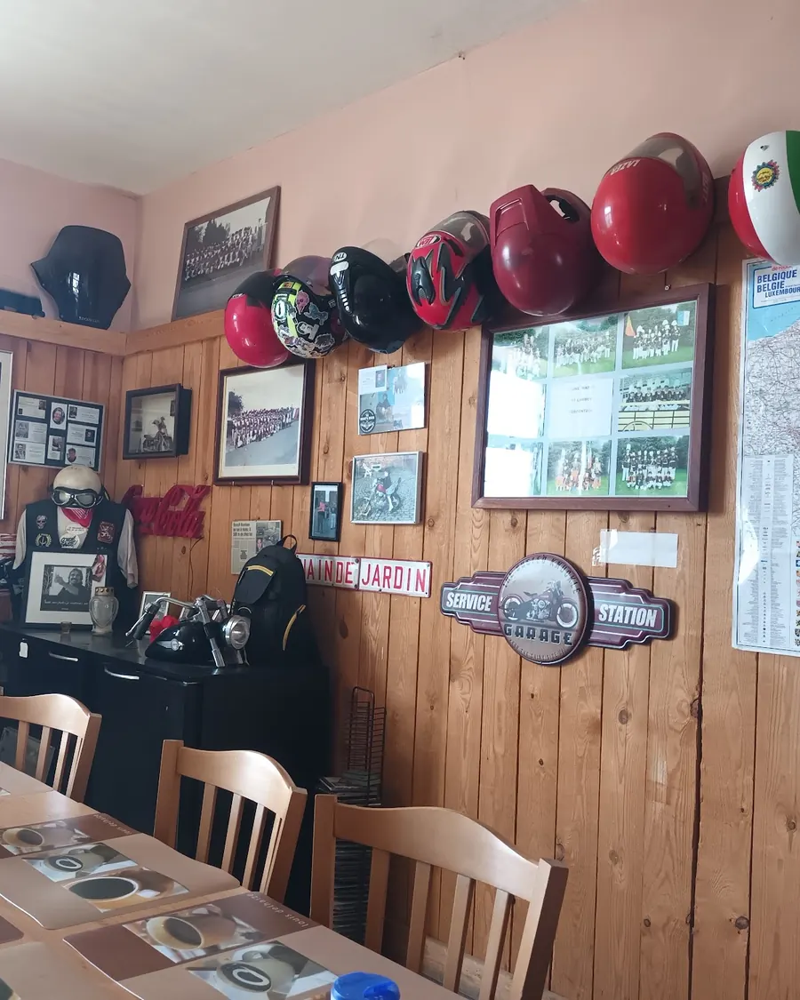
Casques au mur, motos devant
Un café-restaurant que les motards ont adopté, avec ses habitués et son esprit de groupe, et où chacun trouve sa place.
« Café restaurant pour les motards mais tout le monde est bienvenu »
Jacques P. · avis Google
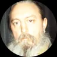
Chez Alain, local des Night's BirdsMarc T.
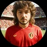
Toutou friendly et motard friendlyGeorges R.
Pas de chichis, que des habitués
Note de 4,6 sur 5 sur la fiche du café.
Horaires
| lundi | 10 h – 22 h |
|---|---|
| mardi | 10 h – 22 h |
| mercredi | fermé |
| jeudi | 10 h – 22 h |
| vendredi | 10 h – 22 h |
| samedi | 10 h – 22 h |
| dimanche | 10 h – 22 h |
Fourchette de prix · 10 à 20 € par repas (fiche Google)
Rue de Senzeilles 36, 5630 Cerfontaine